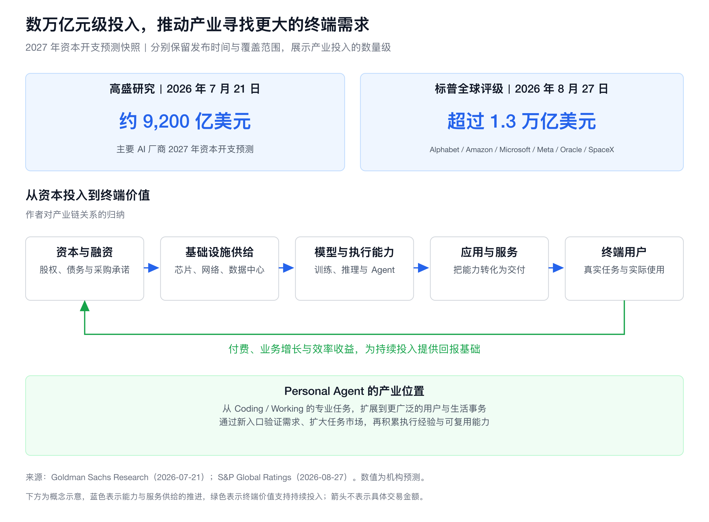
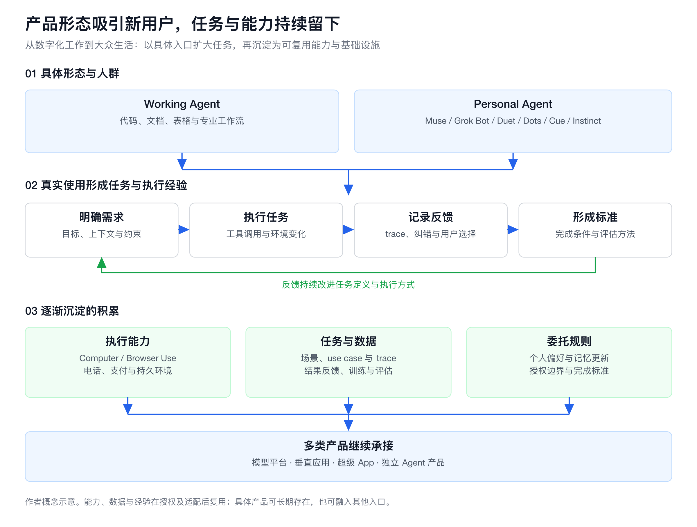
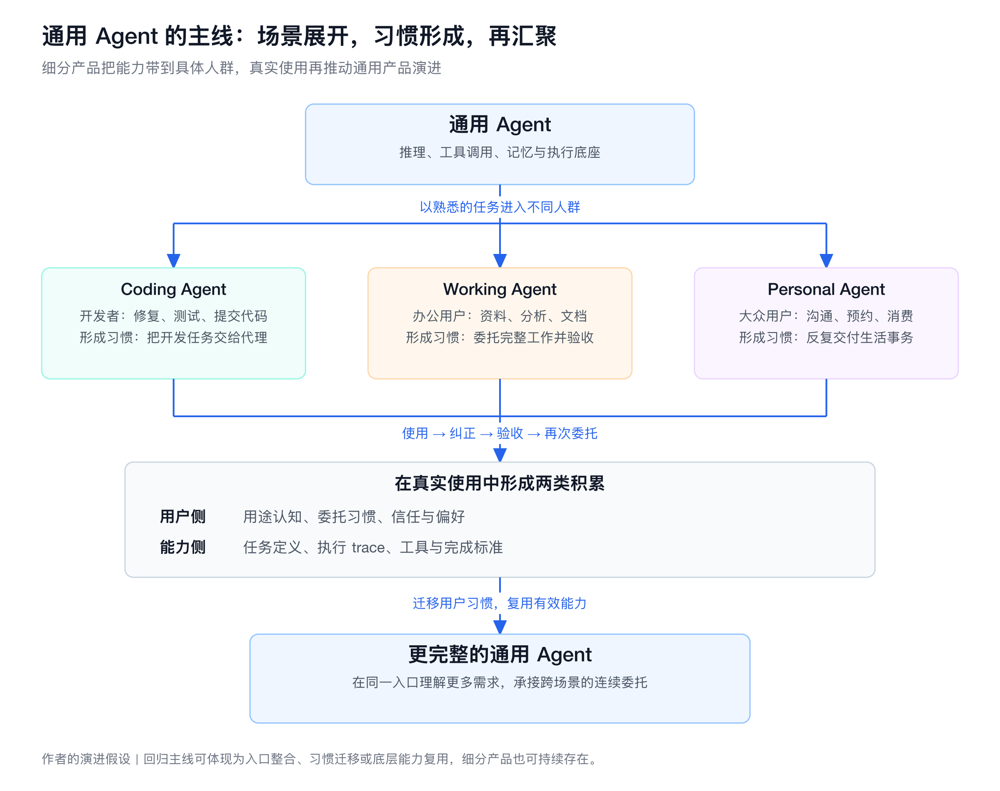

人们像在游行的日子里那样，来到广场上站好位置。
La gente se había situado en la plaza como en los días de desfiles.26
——加西亚·马尔克斯，《一桩事先张扬的凶杀案》27
Personal Agent 还没有成为多数人的日常，关于它的未来，已经有了一份广为流传的预告：它会替人打电话、订餐厅、安排出行，也会为厂商打开新市场，为不断增长的算力寻找新需求。Muse、Grok Bot、Dots、Duet、Cue 等产品，正带着这些期待走向用户。人们究竟愿意把什么事交给它，又有哪些期待会在真实使用中成立，是这一轮产品探索要回答的问题。
我觉得，可以从历轮 Agent 产品的积累中寻找答案：先以具体的产品形态吸引一类用户，在真实使用中明确需求、积累能力，再将其中可复用的部分沉淀为通用的 Agent 能力与基础设施。Working Agent 已经走过了其中一段，Personal Agent 正把这条路径推向更多人的日常生活。
Working Agent 留下了数字化工作的任务与执行经验
Working Agent 的一项核心价值，是让数字化工作的需求逐渐变成可执行、可评估的任务。用户的委托、纠正和验收，明确了所需的上下文、工具和完成标准；执行 trace 则记录过程与反馈，为训练和评估提供依据。Anthropic 的评估指南与 Microsoft Research 的 Agent Lightning，分别展示了这些记录在评估和强化学习中的用途。14 15
Computer Use、Browser Use 是其中沉淀的执行能力，让 Agent 通过已有界面操作软件和网站，覆盖缺少专门接口的长尾服务。23 随着 Operator 整合进 ChatGPT agent、Claude 推动聊天与 Cowork 的融合，产品入口也在变化。12 13 入口随产品演进而变化，已经积累的任务与执行经验则可以继续复用。
Personal Agent 用生活场景，把更多人带入行动委托
此前 Codex 这类产品的典型使用方式，仍然偏专业：围绕仓库、代码、文档和工作流展开。要让更多 C 端用户开始委托 Agent，需要一种与日常生活更相关、用途更直观的产品形态。「帮我打电话、订餐厅、安排出行」提供了这样的入口。
Muse 的设计说明很好地解释了这种变化。设计者将学校邮件、家庭日历、开学采购和订餐放在同一个使用情境里：用户有一组需要照顾的事情，Agent 从分散的信息中识别任务，再把它们推进到结果。产品还提供目标管理、主动建议、后台工作和可编辑记忆，让用户通过熟悉的对话逐渐建立委托关系。1 2
专业用户往往知道自己要解决哪个 issue、处理哪张表；生活需求则散落在邮件、日程、聊天与临时想法里。Personal Agent 的价值，也包括帮助用户识别和组织这些任务。
Instinct 选择短信和电话作为入口，官网列举了买食材、订车票、送花等日常事务。Cue 则为代理提供独立邮箱、电话号码、钱包和电脑，让它可以在用户授权与预算内处理沟通和交易。几种产品都在把原本需要用户操作多个软件的过程，收拢成一次更容易表达的委托。8 9
|
产品 |
产品做法 |
降低的使用成本 |
|
Muse |
帮助用户从分散生活信息中组织任务 |
|
|
Grok Bot |
减少重复准备环境与交代任务 |
|
|
Duet / Dots |
减少监测变化与跟进工作的精力 |
|
|
Cue |
有邮箱、电话、钱包和电脑的代理[8] |
把沟通、交易与执行组织成完整委托 |
|
Instinct |
短信与电话入口[9] |
沿用用户已有的沟通习惯 |
功能依据对应产品资料；「降低的使用成本」为作者归纳。Duet、Dots、Grok Bot 也覆盖专业工作，工作与生活场景正在同一批产品中扩展。
大众使用 AI 已有基础。OpenAI 于 2025 年发布的消费端研究显示，当时约 70% 的使用与工作无关，约 49% 的消息属于咨询和询问。11 Personal Agent 因而有机会承接一批已经习惯向 AI 提问的人，让他们进一步开始交付行动。这既扩大用户覆盖，也扩大任务规模，并带来更多 token 消耗。
新的人群，也给厂商带来新的竞争机会
Personal Agent 的扩圈，也为上一轮在 Coding Agent、Working Agent 上落后的公司提供了新的机会。开发者工具和专业工作流有各自的积累门槛，而大众产品的设计、分发、获客和用户运营，是一些公司更熟悉、资源也更充足的领域。
当需求从代码修复扩展到家庭事务、消费和出行，已有的社交入口、支付账户、会员关系和商家网络就有了新的作用。Meta 将 Muse 接入 WhatsApp，千问则接入淘宝、即时零售、支付宝、飞猪和高德等服务。厂商可以借助已有用户关系和服务网络，让 Agent 更快进入真实场景。1 20
Cue 则采用独立应用承接个人代理，与 Manus 使用相同基础设施。8 已经在工作任务中形成的执行底座，可以通过新的交互和场景，触达更广泛的用户。
投资叙事也随之变得熟悉。Instinct 在 2026 年 9 月宣布 10 亿美元 C 轮融资，估值 100 亿美元。22 《一技半解》圆桌提出，DAU、留存和交易额，让 Personal Agent 回到互联网从业者与投资人熟悉的分析框架。10 用户规模、使用习惯和商业转化，再次成为厂商与资本容易形成共识的增长故事。
数万亿元资本开支，推动产业寻找更大的终端市场
厂商争取新入口的同时，整个 AI 产业也在为巨大的基础设施投入寻找终端需求。高盛在 2026 年 7 月预计，主要 AI 厂商 2027 年资本开支约为 9,200 亿美元；标普在 8 月针对 Alphabet、Amazon、Microsoft、Meta、Oracle、SpaceX 六家公司的预测，则超过 1.3 万亿美元。24 25 两份预测的发布时间与覆盖范围各有区别，共同指向的是万亿美元级、折合人民币数万亿元级的年度资本开支预期。
这些投入先转化为芯片、服务器、网络、数据中心与能源设施的订单，上游供应商获得收入，云厂商形成产能。随着设施投入运行，折旧、运维和持续更新需要稳定的使用与付费来支撑。最终租用算力的应用和服务，仍要靠客户收入覆盖算力、获客与交付成本，产业链才能形成持续的商业回报。
投资与算力采购也在强化这一循环。Amazon 与 Anthropic 在 2026 年 4 月的合作公告中，同时披露了新增 50 亿美元投资、未来最多再投 200 亿美元，以及 Anthropic 在未来十年向 AWS 支出超过 1,000 亿美元的承诺。18 投资与采购把上下游连接起来；随着这类承诺落地，终端市场需要验证的需求规模也随之扩大。
当年度投入进入这样的数量级，专业任务之外的市场就更受关注。Personal Agent 将能力带向购物、出行和家庭事务，探索订阅、交易与服务收费，也为已有平台寻找业务增长。新增用户和 token 消耗体现了使用规模，持续付费与有效交易才进一步支撑终端回报。

图 1｜上方分别列示高盛与标普对 2027 年资本开支的预测，口径与日期见图注；下方为作者对资本投入、产业供给与终端需求关系的概念归纳。
这一轮可能沉淀的，是生活事务的任务与委托规则
这些生活事务也会反过来推动执行能力成熟。Google 在 2025 年开始在美国搜索中推出代用户致电商家、查询价格与可预约情况的功能。21 电话、预约等能力与持续对话、个人记忆和后台执行相结合，逐渐有机会承担更完整的事务。
支付基础设施也已经跨产品复用。Stripe 为 Muse 接入 Link 代理钱包，用户在聊天中确认交易金额，钱包为获批购买提供支付方式。同一公告还提到 Grok Bot 与 Instinct 对这套钱包的使用。16 从单个产品到共同使用的支付服务，生活事务的执行能力正在形成可复用的基础设施。
随着任务持续发生，产品还会逐渐明确人们愿意怎样委托，包括上下文如何保留、偏好怎样更新，以及哪些操作需要确认。
Grok Bot 的持久环境提供了一种实现方式。官方文档说明，一个用户的多个 Bot 共享文件、浏览器和登录状态，配合定时与事件触发的 Routines，持续承担某项工作。3 4 用户从一次次重新交代任务，逐渐转向让代理保持状态、等待变化、继续推进。
Cola 的圆桌讨论则涉及从多次交流中识别偏好，以及记忆的更新、纠正和遗忘。10 用户群扩大后，这些机制也要适应更多样的习惯和决策方式。
授权同样正在变得具体。Duet 在付款、删除或发送潜在敏感信息前展示动作与内容，并等待批准；Google 的 AP2 则通过授权凭据表达用户意图与交易权限。6 17 从产品确认卡到支付协议，生活事务的委托边界正在被转成可以执行的机制。

图 2｜不同入口通过真实任务积累执行经验，沉淀能力、任务数据与委托规则，并由多类产品继续承接。
电话和支付扩大了执行范围，持久环境、记忆与授权机制则让委托能够延续。这些能力连同真实任务的 trace 和结果反馈，将为后续训练、评估和产品设计提供依据。
把通用 Agent 看作一条持续演进的主线，细分产品就像向不同人群展开的分支：Coding Agent 让开发者习惯交付代码任务，Working Agent 让办公用户习惯委托完整工作，Personal Agent 则把这种习惯带进生活。随着用途变得熟悉、委托关系逐渐稳定，用户习惯与执行能力有机会重新汇入通用 Agent，让同一入口承接更广泛、跨场景的事务。

图 3｜通用能力进入细分场景，形成用户习惯与执行反馈，再通过入口整合、习惯迁移和能力复用回到主线。
稳定交付，才能把尝试变成长久的委托
吸引用户之后，Personal Agent 要找到值得反复委托的任务，并稳定办成。生活事务涉及商家沟通、状态变化和异常处理，长期使用取决于代理能否省下用户的总精力。推荐与收费关系、授权边界、服务接入，也会影响这份信任。Amazon 阻止 Muse 在其网站浏览和购买，就说明实际交付还取决于平台与 Agent 之间的商业安排。19
因此，这一阶段应当优先验证真实需求、积累执行反馈：用户交付什么，提供哪些上下文，在哪些环节纠正代理，怎样验收，以及是否愿意再次委托。再将反复验证有效的工具组合、确认步骤和纠错方式，沉淀成可复用的流程。让真实委托决定演进顺序，workflow 才有明确的需求和执行依据。
这些积累最终由模型平台、垂直应用、超级 App，还是新的独立产品承接，仍然开放。一种产品形态的存续，与这一轮探索的长期价值，可以分别判断。
将来回看这一轮 Personal Agent，最值得翻阅的，或许是那些具体委托留下的记录。今天关于未来的预告，会在这些记录里逐渐得到回答。产品的名字可能会变，下一次委托却可以从这里继续。
REFERENCE
以下资料均于 2026 年 11 月 9 日查阅。官方材料用于说明产品设计与已宣布的能力；圆桌材料保留嘉宾观点归属。
- Meta. Introducing Muse: The World’s First Personal AI Agent Built for Everyone. 2026-09-08；2026-09-30 更新。
- Mona Sarantakos / Christine Awad, Meta. How We Designed Muse. 2026-09-08。
- xAI / SpaceXSI. Designing Grok Bot for a world of persistent agents. 2026-09-03。
- xAI / SpaceXSI. Grok Bot：产品、定价与持久电脑说明. 动态页面，2026-11-09 查阅。
- Anthropic. Introducing Claude Duet. 2026-10-21，研究预览。
- Anthropic. Claude Duet Safety, Privacy, and Security. 2026-10-23。
- OpenAI. Introducing dots. 2026-09-29；2026-11-03 更新。
- Manus. Introducing Manus 2.0. 2026-09-28，含 Cue 首发说明。
- Instinct. Instinct 产品介绍. 动态页面，2026-11-09 查阅。
- 一技半解. 漫谈 Personal Agent：指标、Memory、商业…｜vol.22 圆桌实录. 2026-11-05 首发；2026-11-09 更新。产品体验与判断归属于相应嘉宾，非独立评测。
- OpenAI / Chatterji et al.. How people are using ChatGPT. 2025-09-15，研究为历史消费端样本。
- OpenAI. Introducing Operator. 2025-01-23；整合说明更新于 2025-07-17。
- Anthropic. Claude Cowork and chat are one Claude. 动态帮助文档，2026-11-09 查阅。
- Anthropic. Demystifying evals for AI agents. 2026-01-09。
- Microsoft Research. Agent Lightning: Adding reinforcement learning to AI agents without code rewrites. 2025-12-11。
- Stripe. Stripe helps Muse, Meta’s new personal AI agent, shop across the internet with Link. 2026-09-08。
- Google Cloud. Powering AI commerce with the new Agent Payments Protocol (AP2). 2025-09-16。
- Amazon. Amazon and Anthropic expand strategic collaboration. 2026-04，投资与采购承诺公告。
- Nathan Bomey, Axios. Amazon boots Meta’s Muse in fight over AI shopping. 2026-09-21，仅引用阻止访问这一报道事实。
- Alibaba Group. Qwen App Advances Agentic AI Strategy by Turning Core Ecosystem Services into Executable AI Capabilities. 2026-01-15，公告时在中国公开测试。
- Google. More advanced AI capabilities are coming to Search. 2025-07-16。
- Sarah Perez, TechCrunch. Viral AI agent Instinct raises US$1B Series C at a US$10B valuation. 2026-09-28，仅引用融资额与估值。
- Anthropic. Let Claude use your computer in Cowork. 动态帮助文档，2026-11-09 查阅。
- Goldman Sachs Research. What the Capex Boom Means for Stock Investors. 2026-07-21，2027 年资本开支预测。
- S&P Global Ratings. AI Infrastructure Investment To Exceed $1.3 Trillion By 2027. 2026-08-27，覆盖 Alphabet、Amazon、Microsoft、Meta、Oracle、SpaceX 六家公司。
- Gabriel García Márquez / 墨西哥国立自治大学（UNAM）论文库. Crónica de una muerte anunciada 原文引句，见 La perspectiva docente en torno a la literatura latinoamericana. 西班牙语原句见论文印刷页 44（PDF 第 48 页），该论文引自小说第 119 页。
- 黄夏 / 时代周报. 一份完美融合魔幻与真实的答卷. 2013-09-26。题记中文据此书评转引；书评注明魏然译、南海出版公司2013年6月版，纸书原页码未核实。